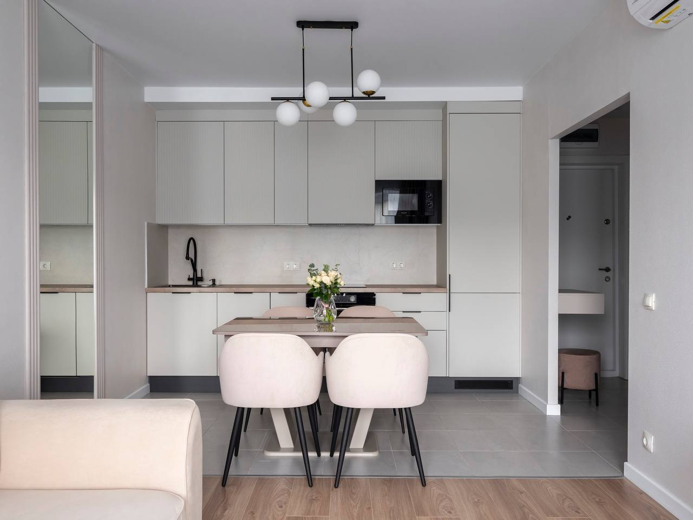

ГОТОВЫЕ И ИНДИВИДУАЛЬНЫЕ КУХНИКухня.
Кухня.
С вашим характером.
Готовые решения и кухни по индивидуальному проекту. Подберём планировку, фасады и наполнение под ваше помещение.
Обсудить мой проект
МАТЕРИАЛЫ И РЕШЕНИЯСначала планировка.
Сначала планировка.
Потом детали.
Где разместить технику, сколько оставить рабочей поверхности и как организовать хранение. Согласуем проект перед заказом кухни.
Рассчитать мой проект